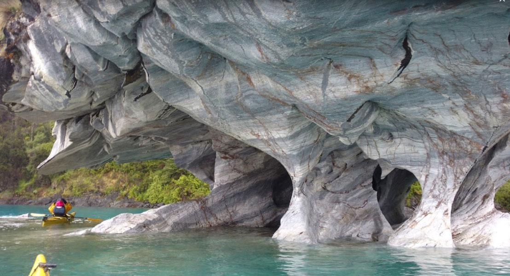
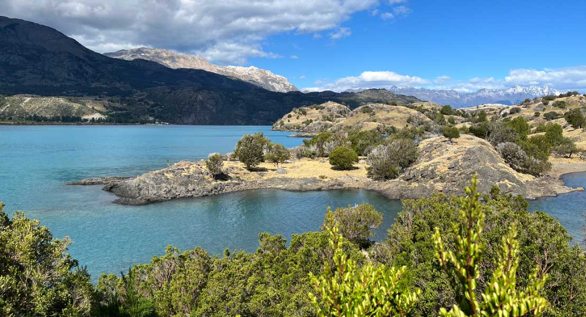
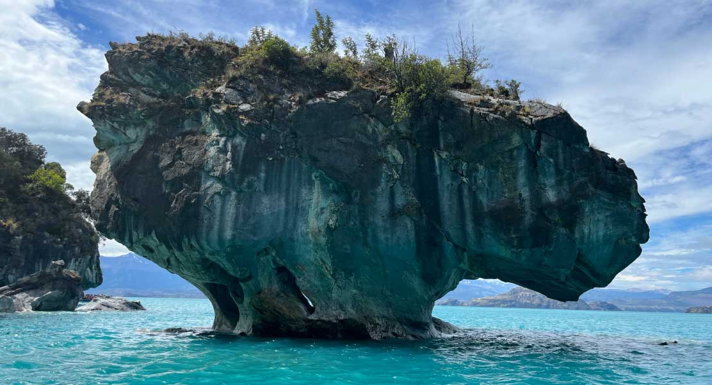
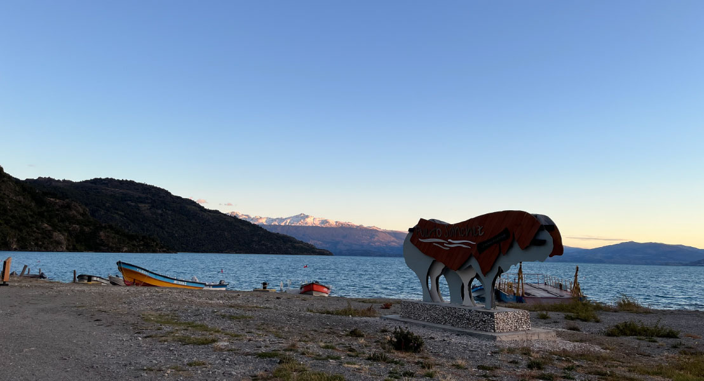
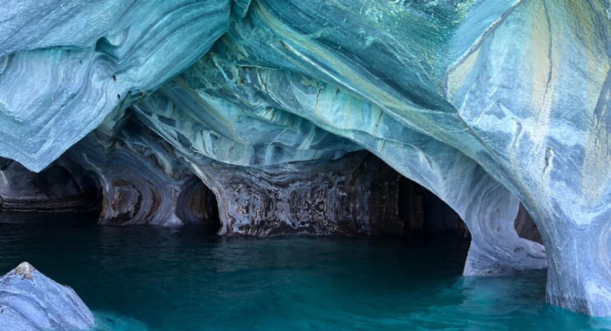
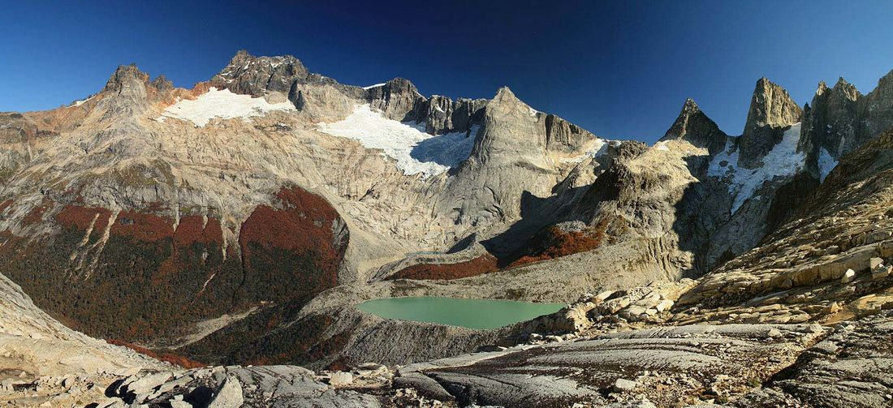

Adquiere un terreno dentro de una red de parques privados de la Patagonia chilena, protegidos a perpetuidad por el Derecho Real de Conservación. Quien entra custodia un territorio que existirá para siempre.
En el extremo sur de Sudamérica, en la Patagonia chilena — Región de Aysén, en la cuenca del Lago General Carrera, el segundo lago más grande del continente, alrededor de las Torres del Avellano. Agua glaciar, bosque nativo de lenga y ñirre, montañas de escala monumental. Aquí están nuestros parques.
La infraestructura llega: la pavimentación de la Carretera Austral y la ampliación del aeropuerto de Balmaceda acercan el sur como nunca antes. Donde llegó el crecimiento sin un modelo, el paisaje pagó el precio. Tres lugares comparables lo muestran.
Crecimiento demográfico en 15 años; el Lago Llanquihue con episodios críticos de floraciones. Un destino que se saturó.
El lago declarado «zona saturada» tras la venta masiva de parcelaciones y el crecimiento sin reglas.
Superficie privada subdividida y fragmentada a ritmo acelerado, sin un marco que la proteja.
La ola llega igual. La única decisión es cómo: un modelo que subdivide y agota, o uno que protege el territorio con reglas permanentes — para que exista dentro de cien años.
Parques la Patagonia es una red de parques privados de conservación en la Región de Aysén. Dentro de cada parque, unos pocos terrenos habitables conviven con la conservación. Cada compra financia la protección del parque y la expansión hacia nuevas áreas — tres entidades, un solo propósito.
Un ecosistema simbiótico: la venta financia la protección, la protección da garantía perpetua, y la comunidad de embajadores la sostiene y la hace crecer. Cada terreno protegido hace posible el siguiente.
Sobre el Lago General Carrera, en la comuna de Río Ibáñez — bosque nativo de lenga y ñirre, ríos y lagunas glaciares, montañas de escala monumental. La mayor parte del territorio permanece protegido; solo una pequeña zona admite espacios de vida integrados al paisaje.
Terrazas naturales y vistas abiertas hacia el lago y las montañas. Donde hoy es posible volverse embajador.
Terrenos disponiblesEl parque que dio origen al proyecto. Bosques de lenga, lagunas de origen glaciar y más de veinte años de conservación activa.
Donde naturaleza y cultura patagónica conviven — arrieros, transhumancia y un paisaje de profunda identidad territorial.
Valle, bosque y orilla de lago con alto valor paisajístico y potencial de restauración ecológica activa.
En incorporaciónLa Sierra del Avellano forma parte de un corredor biológico que enlaza áreas protegidas de la Patagonia. Nuestros parques son parte de ese tejido — la visión 2040 es contribuir a un corredor continuo de conservación.
El Derecho Real de Conservación (Ley chilena N° 20.930) fija condiciones de conservación permanentes sobre el territorio, sin importar quién sea su dueño en el futuro. Se inscribe en el Conservador de Bienes Raíces y acompaña al terreno para siempre. No es una restricción — es una garantía: asegura que tu entorno permanezca intacto.
Cuando compras un terreno y te vuelves embajador, no proteges solo tu parcela — entras a una comunidad que hace crecer el territorio protegido. Y no se detiene en ti.
Tu compra financia a la Fundación sin fines de lucro que custodia el Derecho Real de Conservación. La protección no depende de ningún dueño.
Cada compra suma nuevas hectáreas a la red de parques — la meta 2030 es alcanzar 5.000 ha bajo custodia.
Reforestación con especies nativas, cercos que protegen la regeneración y monitoreo de fauna.
Educación ambiental y trabajo conjunto con Puerto Sánchez y los actores de la Región de Aysén.
La Fundación Parques la Patagonia es la entidad sin fines de lucro que garantiza y custodia el Derecho Real de Conservación a perpetuidad. Es el centro ético del proyecto — independiente del brazo comercial.
Tu compra la sostiene; ella sostiene el territorio. Los nombres de los dueños cambiarán con los años; la Fundación permanece, velando porque lo protegido siga protegido para siempre.
Cada terreno vive en un sector con su propio carácter — vista, privacidad, cercanía al agua, bosque, acceso. Vuela sobre el territorio real, elige tu terreno y míralo desde todos los ángulos.
Terrazas altas con vistas abiertas al General Carrera. Para quien busca el horizonte.
Inmersión en lenga y ñirre, máxima privacidad y silencio. Para quien busca refugio.
Cercanía al agua y al borde, con vistas al lago. Para quien busca la orilla.
Para quienes quieren llegar y quedarse. Adquieres tu terreno junto a una cabaña diseñada para el lugar — arquitectura de baja intervención, integrada al paisaje, construida por nuestro equipo. Tú eliges el terreno; nosotros lo dejamos listo.
Vive la experiencia de las Capillas de Mármol y sus islas, a pocos minutos de nuestros parques — con vistas inigualables al Lago General Carrera, el cordón montañoso de la Sierra del Avellano y las imponentes Torres del Avellano.

+
+
+
+
+
+Pasa el cursor sobre cada foto para ver el atractivo. Todas las imágenes son reales, capturadas en la Región de Aysén.
Adquieres tu terreno y te vuelves embajador desde el primer día.
Entras con un pie y avanzas en cuotas, sin esperar la aprobación de un banco.
Tu terreno junto a una cabaña integrada al paisaje, coordinada con tu compra.
Una travesía donde dejas de ser visitante y te vuelves embajador. Es una inmersión real en el territorio — y la mejor forma de saber si este lugar es tuyo. El viaje es el primer paso del camino. Primeros viajes en diciembre 2026.
Conocer El Camino del Embajador →Las dudas honestas son bienvenidas — de hecho, son señal de un buen embajador. Aquí las que más se repiten; el resto lo conversamos directo.
Sí. El terreno es tuyo, con escritura, y se transfiere como cualquier inmueble en Chile — sin permanencia mínima: vendes cuando quieras. Lo que viaja con él es el compromiso de conservación, porque el Derecho Real de Conservación va amarrado a la tierra, no a la persona: quien te compre recibe el terreno con las mismas reglas de protección. Tu comprador natural es alguien que valora exactamente eso — un entorno que seguirá intacto.
Sí. El terreno se hereda como cualquier propiedad en Chile: entra a tu sucesión y pasa a tus herederos según tu testamento o la ley. Lo reciben con el Derecho Real de Conservación incorporado — las mismas condiciones que aceptaste al entrar. Para muchas familias eso es justamente el punto: no dejas solo un activo, dejas un territorio protegido que seguirá en pie para la próxima generación.
Sí. Los terrenos cuentan con conectividad Starlink, que cambió por completo lo que significa vivir en la Patagonia profunda: hoy puedes trabajar, comunicarte y estar conectado sin renunciar al silencio y al aislamiento del lugar.
Con energía solar y agua de vertiente. Los terrenos se habilitan para funcionar de forma autónoma, sin tendidos eléctricos que crucen el paisaje ni dependencia de redes lejanas. Vivir liviano sobre la tierra es parte del diseño, no una limitación — la infraestructura base para habitar está resuelta.
Los conocemos y celebramos que existan — mientras más tierra protegida en Aysén, mejor para todos. La diferencia está en la arquitectura. En la mayoría de los modelos, la misma entidad comercial que vende administra también la promesa de conservación. Nosotros separamos los roles en tres: una Fundación independiente y sin fines de lucro que custodia el Derecho Real de Conservación, una comunidad de embajadores que son los dueños, y el brazo comercial que financia el modelo. La protección no depende de nuestra buena voluntad — queda amarrada legalmente, con un garante que no vende nada.
Lo práctico: el Estado no tiene capacidad para recibir, financiar y cuidar cada paño valioso de Aysén — los parques nacionales ya operan con presupuestos ajustados, y la conservación privada existe para complementar, no para reemplazar.
Lo económico: donar la tierra no la protege; protegerla cuesta todos los años, para siempre, y alguien tiene que financiarlo. Nuestro modelo hace que esa protección se autofinancie, en vez de depender de subsidios o filantropía.
Y lo que creemos de verdad: la conservación funciona mejor con una comunidad que habita y cuida el territorio que con un cartel de «prohibido el paso» y nadie alrededor.
Apadrinar un m² es una donación a la Fundación, no una compra de tierra — y lo aclaramos siempre de frente. En Chile la ley no permite escriturar superficies tan pequeñas de suelo rural (el mínimo legal para inscribir es media hectárea), así que nadie puede poner un metro cuadrado a tu nombre en el Conservador de Bienes Raíces. Lo que sí ocurre: tu aporte entra a la Fundación que custodia la protección del parque a perpetuidad, y recibes un certificado con las coordenadas de tu m², visible en el mapa del parque, más tu lugar en la comunidad de embajadores. El metro no es tuyo en papel; la protección que financia es real y queda amarrada a la tierra para siempre.
¿Tienes una pregunta que no está aquí? Escríbenos y te respondemos directo →
La red crece porque hay quienes eligen ir más lejos — custodiar una superficie mayor, desarrollar junto al proyecto, o sumarse a la expansión del corredor hacia la visión 2040. Si ese eres tú, la conversación es directa y a puertas cerradas.
Custodiar una superficie mayor dentro de la red, más allá de un solo terreno.
Construir y dar vida al lugar junto al proyecto, en clave de baja intervención.
Ser parte de sumar los próximos parques a la red de conservación.
Conversación directa y confidencial. Sin catálogos ni cifras públicas — se conversa según el interés.
Déjanos tu email y te contamos más — qué sector se ajusta a ti y cómo entrar.